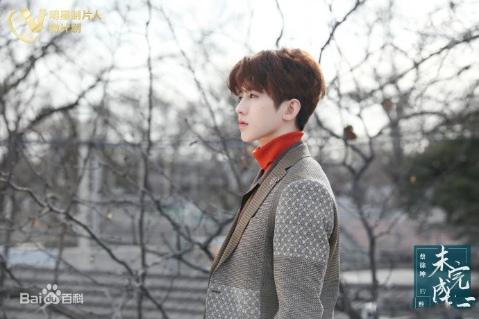
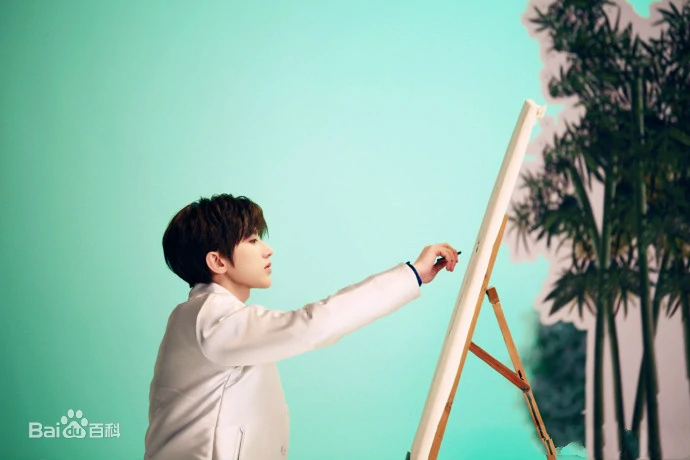

1.基本信息
2.个人生活蔡徐坤年8月2日出生于浙江省温州市,户籍湖南吉首 [140] ，中国内地男歌手、演员、原创音乐制作人 [1] 、MV导演 [108] 2012年8月,蔡徐坤担任主演的偶像剧《童话二分之一》播出,由此开始步入大众视线2018年1月,参加竞演类综艺节目《偶像练习生》并以总票数第一正式出道,成为限定男团NINE PERCENT队长 [3] ;8月,发行首张EP《1》 [4] ,获2018亚洲新歌榜年度盛典最受欢迎潜力男歌手奖 [6] ;随后,他还发行原创单曲《Wait Wait Wait》 ,并携手格莱美奖最佳MV获奖导演戴夫·迈尔斯打造歌曲MV2019年1月,被授予“中牙友好大使暨中牙杰出青年领袖人物”称号 [9] ;3月,成功开启横跨三个国家、六座城市的海外公演《ONE》 [12-13] ;7月,发行首张数字专辑《YOUNG》 [110] ;10月,携手中国儿童少年基金会共同设立“葵计划爱心基金” 2020年3月,加盟《青春有你第二季》担任青春制作人代表 [16] ;4月9日,原创公益歌曲《Home》全网上线 [18] ;随后,加盟户外竞技真人秀《奔跑吧第四季》担任常驻MC [17] ;7月,获第27届东方风云榜最佳男歌手等三个奖项2021年1月,获得第二届TMEA腾讯音乐娱乐盛典年度最具影响力唱作歌手和年度最具号召力歌手两个奖项,单曲《情人》获得年度十大金曲奖 ;4月13日,发行个人创作专辑《迷》 [106] ;7月17日,于北京凯迪拉克中心举办首场个人巡回演唱会,同年获第三届TMEA腾讯音乐娱乐盛典年度最具影响力制作人等多项荣誉 [49]

蔡徐坤小学就读于怀化鹤翔学校
2018年11月,蔡徐坤及其粉丝获得“2018社会力量参与救灾先进单位”荣誉纪念 2019年1月9日,蔡徐坤被授予中牙友好大使暨中牙杰出青年领袖人物 [9] 1月18日,蔡徐坤成为首位NBA新春贺岁形象大使 5月12日,出席中国天气网协办的2019“向灾害SAY NO”暨小小减灾官全国公益科普活动,正式担任中国扶贫基金会减灾形象大使 [75] 2019年10月17日,与中国儿童少年基金会设立“葵计划”爱心基金,蔡徐坤工作室首批捐赠善款60余万元,3年内捐赠300万元,并被中国儿童少年基金会特授予“春蕾计划促进女童保护爱心大使”荣誉称号 [76] 2020年初,在武汉疫情爆发之时,蔡徐坤第一时间向湖北捐款60万元用于一线抗疫 [77] ;8月2日,蔡徐坤工作室为“葵计划爱心基金”捐出82万,他希望这些儿童的生活可以像向日葵一样，每天阳光快乐健康地成长 [78] 2021年7月,向河南暴雨灾区捐款30万元及60万瓶饮用水 [119] ;11月,人民网报道蔡徐坤为患病粉丝捐款10万元,助其顺利筹齐手术费用,并录制视频送上温暖祝福 [122]
